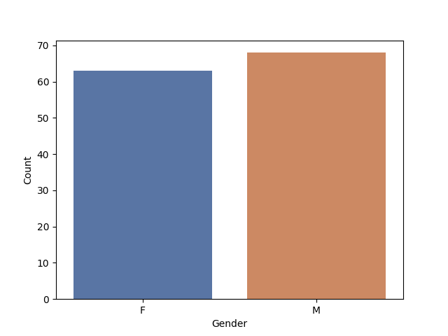
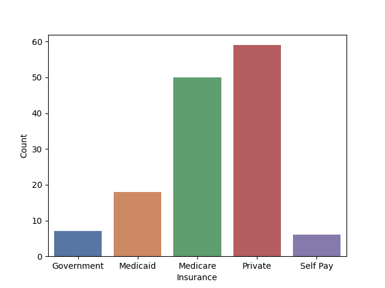
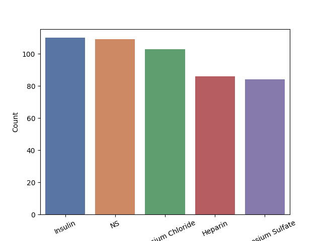
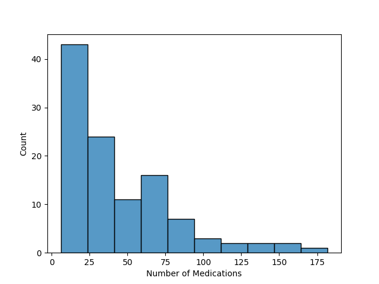
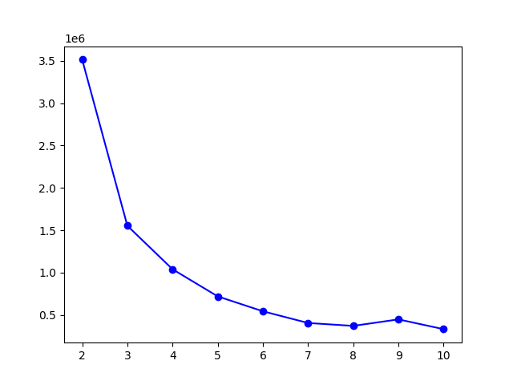

Mixed Clustering Segmentation of Diabetic Patients
0
Diabetes is a disease where Insulin is ineffectively created or used by the body.
In the United States of America 11% of the population have Diabetes.
In the U.S. it is the seventh leading cause of death and cost the country $327 billion to treat.
Insulin is most commonly used to treat patients with Type 2 Diabetes.
Diabetic patients are identified from clinical notes in the MIMIC-3 dataset and segmented
using a mixed clustering model. The results of the analysis can be found in the following workbook:
Analysis Workbook
The model was trained on categorical and numberical data because the features considered were
Gender, Insurance, Medication and Number of Medications a Patient was used during treatment.

Gender of Diabetic Patients
The gender of Diabetic patients within the Beth Israel Deaconess Medical Center (BIDMC)
in Boston, MA between 2008 and 2012 is fairly balanced with an equal number of males and females
treated in the institution. According to the CDC more males are likely to be diagnosed with the
disease than females.

Insurance of Diabetic Patients
Most of the patients with Diabetes and in BIDMC are treating with Private insurance and
a very small portion are on Government insurance. Also, very few pay out of pocket for insurance.
The most used insurance types is considered for those who switch insurance.
In situations where people switch insurance once and both are equally used, then each instance is
separately registered in the analysis. In this analysis patients switch insurance once,
so both instances are used for investigation.

Top 5 Medications Diabetic Patients within the ICU
In BIDMC, most of the Diabetic patients are treating with Saline and Insulin. These patients are likely
treating for Type 2 Diabetes and other conditions. There are patients that do not have any prescriptions
in the system, which is strange for a patient within the ICU. Further understanding is needed for patients
in those cases. It is unclear what intervention they recieve while in the ICU.

Distribution of Drugs per Patient
Most of the Diabetic patients are treating on around 25 medications. In an extreme case, there was
a patient on 182 medications. Those patients may have severe illnesses and may need special attention.

Elbow Method to Find Ideal Number of Clusters
A possible method to segment the patients is using a PCA to calculate a severity score.
PCA would work best if the data was continuous so that the variation could be maximized.
Instead, a Mixed Clustering model as the features are predominantly categorical.
More specifically, a K-Prototype is used to handle the categorical and continuous data.
A K-Means algorithm uses Euclidean distance which would not work will with the categorical data.
KModes finds the most frequent event instead of Euclidean distance and can handle
both categorical and continuous data. The Elbow method is used to select the optimal number of clusters.
The aim is to minimize the distance of each point to the centroid.
It is found that the optimal number of clusters is 5.
Clusters 2, 4 and 5 are composed of predominantly female patients, while clusters 1 and 3
are predominantly males.Clusters 1, 3, 4, and 5 are predominantly Medicare patients, so patients
who are at least 65 years old. Cluster 2 is composed of patients on Private insurance with a median
of 23 medications. Cluster 4 is only composed of Medicare and Medicaid insurance, so patients living
on a lower income/fixed income. These patients are in a different income level than those of Medicare,
who may be retired and living on a fixed income.Patients is clusters 2, 3, and 5 are treating on
Insulin and those is cluster 3 are also suffering from High Blood Pressure.
Cluster 2 and 3 are the largest clusters in the analysis - both with ~1,400 patients.
A pharma representative may want to market to health care professionals treating patients in
cluster 2 because those are using insulin and are covered by private insurance.
A doctor may want to intervene further on patients treating in cluster 3 beause those
patients are at least 65 years old and suffering from both Diabetes and High Blood Pressure.
These patients are already treating with insulin, but may need a change in dose or additional
lifestyle intervention